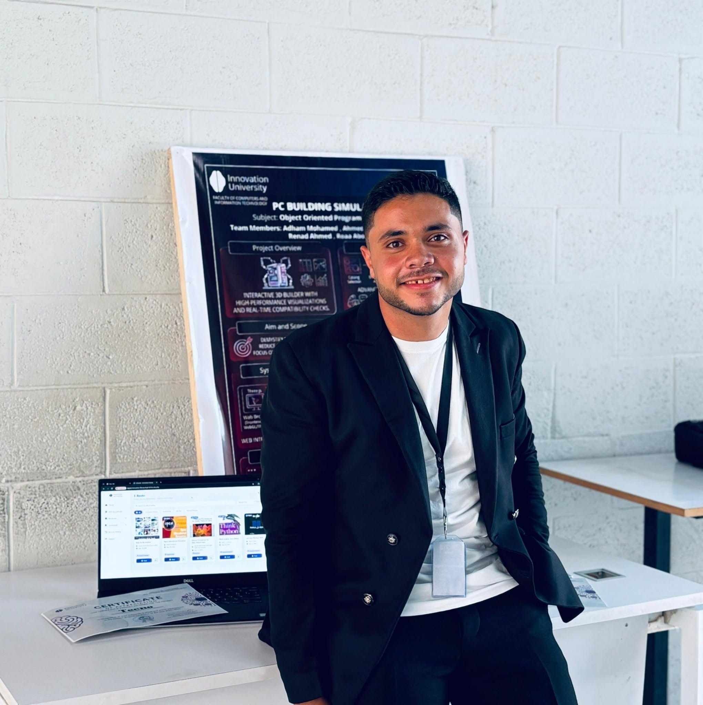

أنا مهندس أنظمة مدمجة وإنترنت أشياء (IoT) شغوف بربط العالم المادي بالرقمي. تكمن خبرتي في تصميم الهياكل الصلبة (Hardware) القابلة للتوسع، وتطوير البرامج الثابتة (Firmware) الموثوقة باستخدام C/C++، وبناء لوحات تحكم متقدمة للمراقبة اللحظية.
من برمجة المتحكمات الدقيقة مثل ESP32 و Arduino، إلى تطبيق أنظمة التشغيل في الوقت الفعلي (FreeRTOS) وبروتوكولات الاتصال الصناعية، أسعى دائماً لتقديم حلول IoT فعالة، آمنة، وعالية الأداء. يدفعني دائماً التحدي المتمثل في تحويل التكاملات المعقدة للأجهزة إلى أنظمة ذكية وسلسة.
I am a dedicated Embedded Systems and IoT Engineer with a strong passion for bridging the physical and digital worlds. My expertise lies in designing scalable hardware architectures, developing robust firmware using C/C++, and building advanced real-time monitoring dashboards.
From bare-metal programming on microcontrollers like ESP32 and Arduino to implementing real-time operating systems (FreeRTOS) and industrial communication protocols, I strive to deliver efficient, secure, and high-performance IoT solutions. I am driven by the challenge of transforming complex hardware integrations into seamless, intelligent systems.
ESP32 / ESP8266
Arduino
Sensors & Actuators
PCB Design (Basic)
C / C++
FreeRTOS
I2C / SPI / UART
MQTT / HTTP
BLE
Qt / QML
ESP-IDF
Git / GitHub
OOP
نظام متكامل يعتمد على متحكم ESP32 ومستشعرات لرصد وتوقع الحرائق وتسريب الغازات، مع بناء لوحة تحكم متقدمة باستخدام Qt/QML لمراقبة البيانات والتحكم لحظياً عبر الاتصال اللاسلكي والسيريال.
An integrated IoT system based on ESP32 and highly sensitive gas/flame sensors to detect potential fires and gas leaks. Accompanied by a custom-built Qt/QML desktop dashboard for real-time data monitoring and hardware control.
روبوت ذكي يتحرك ذاتياً داخل المنشآت باستخدام مستشعرات اللهب للكشف عن بؤر النيران، وتفعيل نظام الإطفاء الميكانيكي مع إرسال إشعارات فورية.
A smart robotics project featuring an autonomous rover designed for indoor environments. It uses embedded C and flame sensors to navigate towards fire sources, automatically deploying a mechanical extinguishing system.
عقدة مصممة للبيئات الصناعية تستخدم FreeRTOS على ESP32 لمراقبة الحرارة والرطوبة وجودة الهواء بالتزامن، وإرسال البيانات بشكل آمن إلى خادم سحابي عبر بروتوكول MQTT.
A robust edge node designed for industrial environments, utilizing FreeRTOS on an ESP32 to concurrently monitor temperature, humidity, and air quality (MQ135). Data is securely published to a cloud broker via MQTT.
نظام لمراقبة التيار الكهربائي غير التداخلي باستخدام مستشعرات ACS712 ومتحكم ESP32. يقوم النظام بحساب استهلاك الطاقة وعرضه على واجهة رسومية مبنية بـ Qt.
A non-invasive current monitoring system using ACS712 sensors and an ESP32 microcontroller. The firmware calculates RMS current and power consumption, pushing data for visualization on a Qt-based GUI.
نظام دخول آمن يدمج قارئ RFID (SPI) ووحدة بصمة الإصبع (UART) مع متحكم مركزي. يدير النظام المصادقة متعددة الطبقات ويتحكم في فتح الباب إلكترونياً.
A secure entry system integrating an RFID reader (SPI) and a fingerprint module (UART) with a central microcontroller. It handles multi-layer authentication and controls an electronic door strike relay.
جهاز أمان ملبوس يستخدم مستشعر الحركة MPU6050. تقوم الخوارزمية المدمجة باكتشاف السقوط المفاجئ وإرسال إشارة طوارئ عبر تقنية البلوتوث منخفضة الطاقة (BLE).
A wearable safety device utilizing an MPU6050 accelerometer/gyroscope. The embedded algorithm detects sudden falls and transmits an emergency signal via Bluetooth Low Energy (BLE) to a connected gateway.
نظام تحكم مغلق الحلقة يراقب رطوبة التربة والحرارة والإضاءة. يستخدم وحدة تحكم PID لتشغيل مضخات المياه ومراوح التهوية وإضاءة النمو تلقائياً.
A complete closed-loop control system that monitors soil moisture, ambient temperature, and light levels. It employs a PID controller to automatically operate water pumps, ventilation fans, and grow lights.
محطة خارجية لمراقبة الطقس تعتمد على وضع السبات العميق للعمل بالطاقة الشمسية لأشهر. تستيقظ دورياً لقراءة بيانات مستشعر BME280 وإرسالها عبر Wi-Fi.
An outdoor weather monitoring station utilizing deep-sleep modes to run on solar and battery power for months. It wakes periodically to read BME280 sensor data and transmits it over a Wi-Fi HTTP POST request.
نظام إدارة مرور محلي مبرمج باستخدام آلة الحالات المنتهية (FSM). يقوم بتعديل توقيت إشارات المرور ديناميكياً بناءً على بيانات الموجات فوق الصوتية التي تكتشف كثافة المركبات.
A localized traffic management system programmed using finite state machines (FSM). It adjusts traffic light timings dynamically based on ultrasonic sensor data detecting vehicle density in lanes.
أداة تشخيص للسيارات تتصل بنظام CAN bus الخاص بالسيارة باستخدام وحدة MCP2515. تستخرج بيانات سرعة المحرك اللحظية وترسلها إلى خادم بعيد للتحليل.
A vehicle diagnostic tool that interfaces with a car's CAN bus system using an MCP2515 module. It extracts real-time engine RPM and speed data, transmitting the telemetry to a remote server for analysis.
هل لديك تحدي في هندسة العتاد أو تبحث عن خبير في الأنظمة المدمجة؟ يسعدني تواصلك.
Have a challenging hardware project or looking for an embedded systems expert? Let's connect.